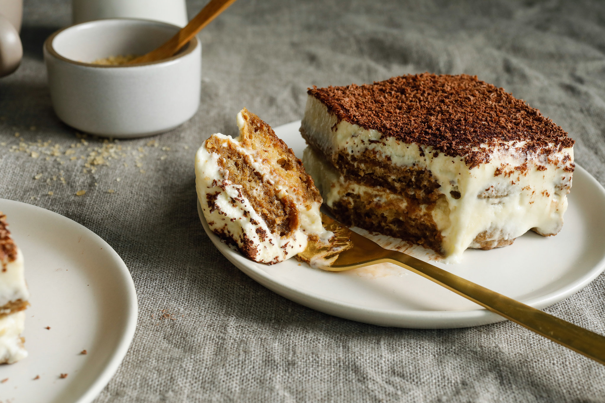

"Unveiling Flavors Through Time: The Epic Saga of Tiramisu!"
Tiramisu, a beloved Italian dessert, originated in the Veneto region during the 1960s. Its name, "Tiramisu," means "pick me up" in Italian, alluding to its energizing coffee content. The dessert traditionally comprises layers of coffee-soaked ladyfingers, mascarpone cheese, cocoa powder, and eggs. Its exact origin is disputed, but it gained worldwide popularity in the 1980s and is now celebrated for its rich, creamy, and indulgent flavor profile.
"Bringing Tiramisu to your kitchen"
Tiramisu is a classic Italian dessert known for its layers of coffee-soaked ladyfingers and creamy mascarpone cheese mixture.
Here's a traditional recipe for making tiramisu:
Elevate Your Dish with Exceptional Ingredients
For the Mascarpone Filling:
1. 1 1/2 cups mascarpone cheese
2. 1/2 cup granulated sugar
3. 2 teaspoons pure vanilla extract
4. 4 large egg yolks
5. 1 cup heavy whipping cream
For Assembling:
6. 1 cup brewed espresso or strong coffee, cooled
7. 1/4 cup coffee liqueur (optional)
8. 24-30 ladyfinger cookies (savoiardi)
9. Unsweetened cocoa powder, for dusting
10. Dark chocolate shavings (optional)
11. Fresh mint leaves (optional)
Let's chop, simmer, and sauté our way to gastronomic glory!
Prepare the Mascarpone Filling:
1. In a mixing bowl, whisk together the egg yolks and sugar until they become pale and creamy.
2. Add the mascarpone cheese and vanilla extract. Mix until well combined and smooth.
3. In a separate bowl, whip the heavy cream until stiff peaks form.
4. Gently fold the whipped cream into the mascarpone mixture until well incorporated. Be gentle to keep the mixture light and fluffy. Set aside.
Prepare the Coffee Mixture:
1. Brew a cup of strong coffee or espresso and allow it to cool to room temperature. You can also add coffee liqueur to the coffee if desired.
Assemble the Tiramisu:
1. Quickly dip each ladyfinger into the coffee mixture, making sure not to soak them for too long. Arrange a layer of dipped ladyfingers in the bottom of a serving dish or a trifle dish.
2. Spread half of the mascarpone mixture over the ladyfingers.
3. Repeat with another layer of dipped ladyfingers and the remaining mascarpone mixture.
4. Cover and refrigerate the tiramisu for at least 4 hours or overnight to allow the flavors to meld and the dessert to set.
Serve the Tiramisu:
1. Before serving, dust the top of the tiramisu with unsweetened cocoa powder using a fine sieve or sifter.
2. Optionally, garnish with dark chocolate shavings and fresh mint leaves.
3. Slice and serve chilled. Enjoy your homemade tiramisu!
Tiramisu is a delightful dessert that combines the flavors of coffee and creamy mascarpone, making it a perfect ending to an Italian meal or a sweet treat for any occasion.